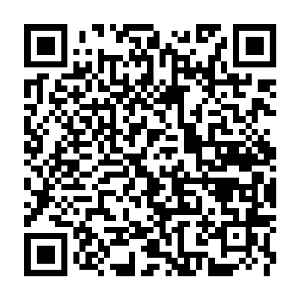
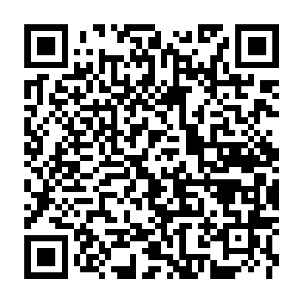

CYBERHIDRO
2022
Obra hipersticional operada a travéz de un código QR - Paisaje sonoro por @cristobalparra
Año 2222. La dimensión agua se manifestó. A través de sueños logra comunicación. Las personas descontinuaron su autoboicot y se atrevieron al origen. Toda la información, toda la historia de nuestra era y las anteriores estaba contenida en su componente. Se descubrió que la voluntad del agua generaba condiciones para su propia transformación, propiciando sus cambios de fases. Como civilización replanteamos nuestra relación y manera de cohabitar con el elemento agua, dejando el maltrato y enfoques de producción/utilización, para establecer una relación armónica, optando por su profunda investigación, llegando a comprender que el fluir con ella, permitía fundir grados de conciencia. Mostrándonos así su infinita información. A partir de este momento, el agua establece redes y conexiones, permitiendo el libre tránsito de ideas ocasionando una era cyberhídrica.

 
